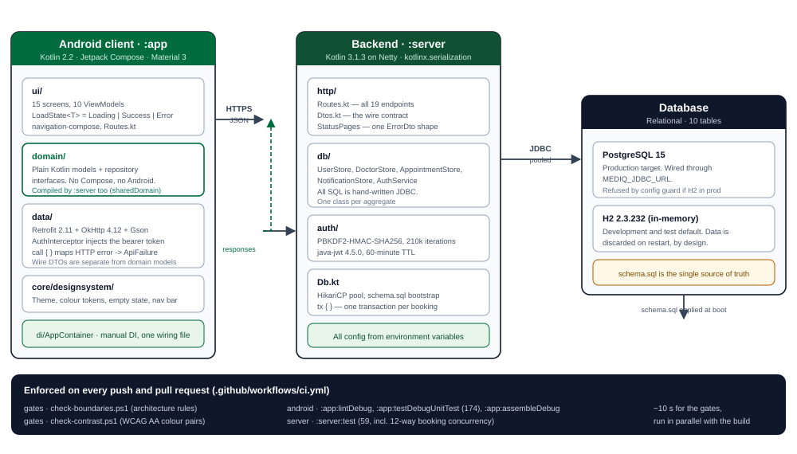
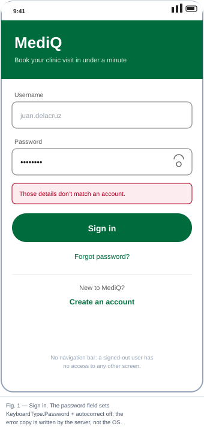
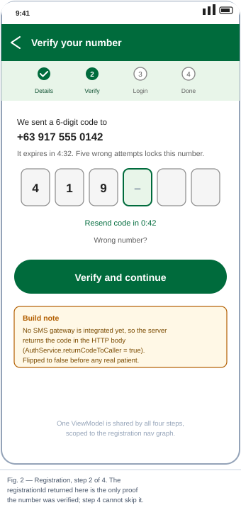
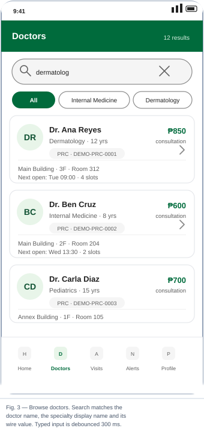
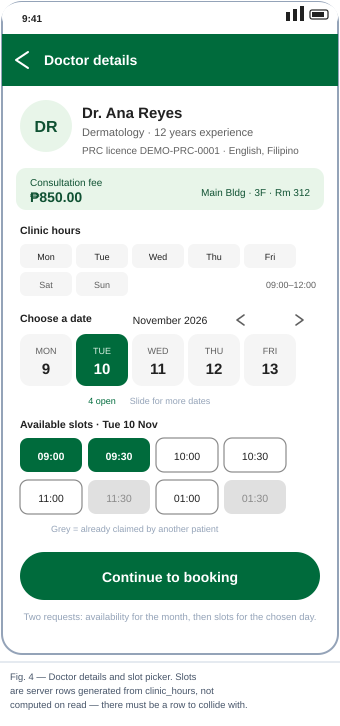
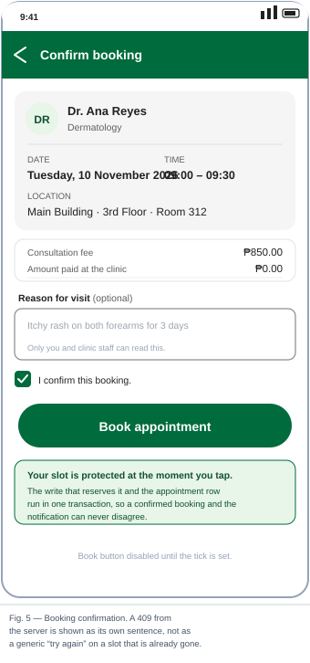
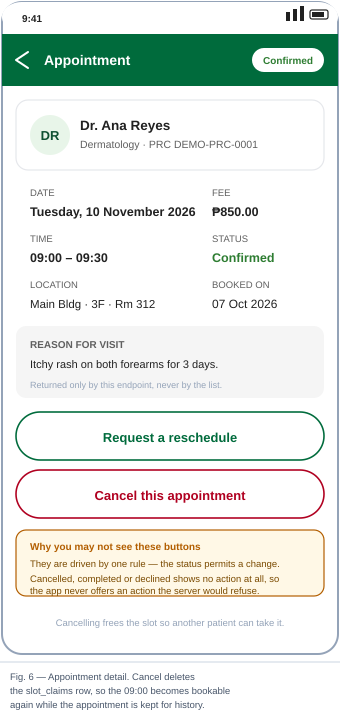
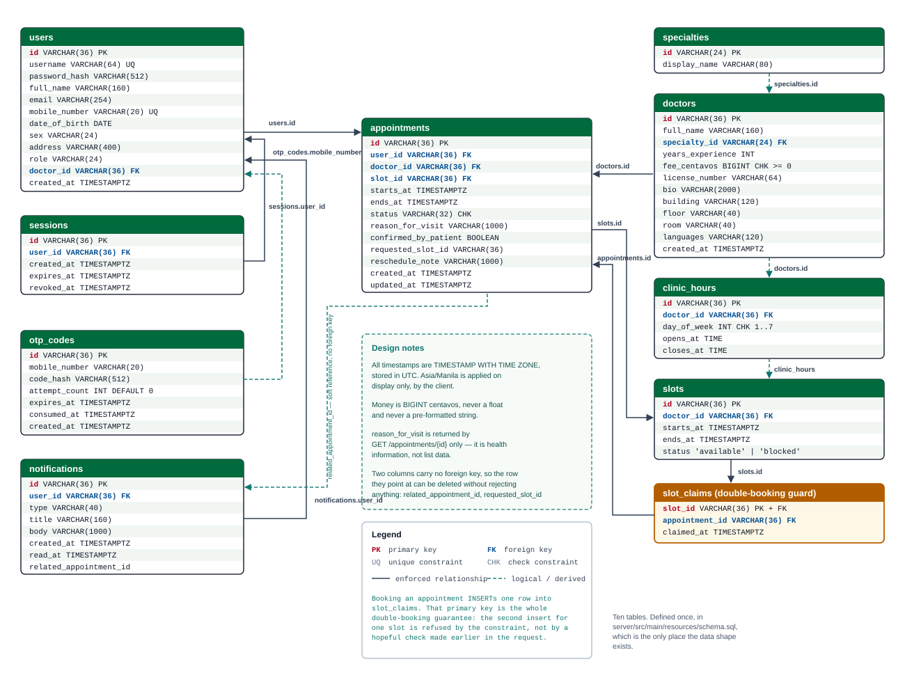

An Android client and a Ktor backend that publish a doctor's real availability, let a patient book it, and stop two patients from holding the same slot.
| 1 | Project Title | Cover |
| 2 | Group Members | Cover |
| 3 | Introduction and Problem Statement | 3 |
| 4 | Objectives of the Project | 5 |
| 5 | Target Users | 6 |
| 6 | System Features and Functionalities | 8 |
| 7 | User Interface Designs | 15 |
| 8 | Database Design | 21 |
| 9 | API Integrations and Their Purpose | 25 |
| 10 | Expected Benefits and Impact | 29 |
| 11 | Conclusion | 32 |
| A | Appendix A: System Architecture and Technology Stack | 33 |
| B | Appendix B: Running and Verifying the System | 35 |
| C | Appendix C: Source Code Map | 36 |
| – | References | 37 |
A neighbourhood clinic in the Philippines schedules roughly eighty to two hundred consultations a day. The tool it actually uses to decide who sees which doctor, and when, is a paper logbook on the front desk, supplemented by a telephone. That works, and it has worked for decades, because a person sits behind it all day. It stops working at the two moments the clinic is closed and at the moment two people want the same thing.
Booking a visit therefore costs a patient a trip. To find out whether the doctor is free on Thursday, a patient either travels to the clinic to stand at the counter or opens the telephone to a line that is busy between the hours most working people are free. Clinic hours and consultation fees are not published anywhere the patient can reach before they leave the house. The consequence is a queue of people physically present at the clinic to reserve a place in a queue that will happen later anyway.
| Failure | What actually happens | Consequence for the patient |
|---|---|---|
| No visibility before arrival | Availability lives in one book, in one building. There is no read-only copy anywhere else. | A patient cannot tell "the doctor is free at 09:30" from "the front desk is free at 09:30". |
| Booking is unavailable outside office hours | The only channel is a call answered by a person who is not there at night. | A patient who works a day job cannot book without taking leave. |
| Double booking | Two staff read the same free row, or one row is filled twice by hand. Nothing in the paper process rejects the second write. | One patient arrives to a full slot. The clinic resolves it at that patient's expense, and the record now disagrees with reality. |
| Cancellations are invisible | A cancelled slot is not announced. The next caller fills it. | Slots stay empty while patients believe they are taken, and vice versa. |
| The visit leaves no record with the patient | There is no artifact the patient controls: no date, no doctor's room, no fee, no note of why they went. | A patient cannot show up correctly, cannot check a fee, and cannot reconstruct their own history. |
| Nothing is measurable | No record of how many calls, how many no-shows, which times are never booked. | The clinic cannot plan staffing or find the hours it should open more capacity. |
Six of the seven failures above are a records problem, and any database would solve them. The seventh, double booking, is not. It is the reason this project is worth building carefully.
A booking is a contended write on a resource that many people see at once. The obvious implementation is: read the slot, see that it is free, write the appointment. That implementation is wrong in a way that testing by hand will never reveal. Between the read and the write there is a window; two requests can both read free and both proceed. The window is milliseconds wide, which is exactly why it survives a demonstration and then fails once in production, in front of a patient, on the busiest morning of the week.
Do not check availability and then write it. Reserve the slot with a single insert into a table whose primary key is the slot id. The database has no window, so two simultaneous bookings cannot both succeed: one of them is refused by the constraint. Section 8.4 works this through.
The system in this document is a patient-facing mobile application and a REST backend. It covers the whole journey from registration to cancelling a visit. Out of scope for the first release:
Each objective is written so that it can be shown rather than asserted. The right-hand column names the artefact or the command that demonstrates it.
| # | Objective | How completion is demonstrated |
|---|---|---|
| O1 | Let a patient register and verify their own mobile number without contacting the clinic, then sign in immediately afterwards. | Four-screen wizard driven by one shared ViewModel. RegisterViewModelTest (22 tests) covers every validation branch and both failure paths of each step. AuthServiceTest (24) covers the server side. |
| O2 | Let a patient find a doctor and see that doctor's real, current availability before travelling to the clinic, including fee, licence number, room and weekly hours. | GET /doctors with search, specialty and building filters, plus /availability and /slots, all generated by the server from clinic_hours. DoctorSearchTest (9) pins exactly what search matches. |
| O3 | Guarantee that one bookable time slot can be held by exactly one patient, even when two patients tap the same slot in the same instant. | slot_claims has a primary key on the slot id. BookingConcurrencyTest fires 12 simultaneous bookings at one slot and asserts exactly one winner and exactly one row in each table. A green board on that row would prove nothing, so the row is marked only by this test. |
| O4 | Let a patient see, cancel or request a move for a visit, and return the time slot to the pool when a visit is cancelled. | DELETE /appointments/{id} deletes the claim row inside the same transaction that sets the status, so the slot is bookable again while the appointment is kept for history. AppointmentLifecycleTest (13) and AppointmentDetailsViewModelTest (27) cover it. |
| O5 | Make the interface readable in both light and dark mode, verified by measurement rather than by inspection, and honest about what it does not yet cover. | check-contrast.ps1 parses the real colour tokens out of the source and computes the WCAG 2.1 relative-luminance ratio for 24 token pairs and 6 status chips. It fails on any pair below its threshold and is a CI gate. |
| O6 | Establish a baseline in which every rule the team writes down is also executed by a command, so a rule cannot rot into documentation that nobody checks. | Two PowerShell gates plus a CI job, with ratchet values that may not move backwards. The motivation is measured, not theoretical: three separate defects shipped with a fully green build precisely because their rules were prose only (Appendix B.3). |
O3 and O6 are the two objectives that did not come from a feature list. O3 is the failure in Section 3.3. O6 came from three occasions when a green build in this project proved nothing, each with the same cause. Both are in the final system because they were the hardest parts.
| Attribute | Description |
|---|---|
| Who | A resident of an urban or peri-urban Philippine district, 18–60, who owns an Android phone and visits a primary-care clinic between one and four times a year. |
| Frequency of need | Low. This is the central design constraint. A user who opens the application four times a year must not have to learn it, and must not have to create an account that costs more effort than the benefit. |
| Device reality | minSdk 24 (Android 7.0), so the application runs on handsets that are several years old and cheap. Core library desugaring is enabled because the domain models use java.time, which is native only from API 26. |
| Connectivity | Frequently poor, on mobile data, sometimes absent. Reads degrade to an empty result with an explanation; writes are never silently retried, because a silently retried booking is a double booking. |
| Digital confidence | Wide. Booking a ride and sending money are ordinary, so the same expectations apply here: no jargon, no unexplained errors, and an interface that is legible for older eyes. |
| Primary need | Certainty: is this doctor free on Thursday at 9:30, where do I go, and how much will it cost? Answered before leaving the house. |
Today's user of the paper logbook. Version one of MediQ gives this person no new screen, so the benefit is indirect. The claim table becomes the single record of who holds which slot, so two staff members reading the same slot can no longer disagree, and a cancelled slot returns to the pool automatically. A staff console that reads and writes the same tables is defined future work (Section 10).
Onboards doctors and their licences, sets weekly hours and fees, and blocks a slot for a meeting. Every column this role needs is already in the schema (doctors.license_number, clinic_hours, doctors.fee_centavos), but no screen exposes them. Roles are modelled (users.role, carried in the JWT), which is what makes the console possible without a migration.
A user who opens the application four times a year pays a four-step registration rarely enough that doing it properly (verified number, then credentials) costs less than skipping it. A user on poor connectivity gets an empty list that says why rather than an error, because "we could not reach the clinic" is a worse first experience than an empty result with an explanation. Error text is written by the server, for a patient, in one sentence, and the client is forbidden from surfacing a framework exception's own message.

Two Gradle modules. :app is the Android client; :server is the backend. The server compiles the client's domain/ directory as an extra source set, so both sides share the domain model and keep separate wire formats. Refactoring a model therefore cannot silently break the API contract.
| Layer | Technology | Responsibility and the rule that keeps it honest |
|---|---|---|
| Presentation | Jetpack Compose, Material 3, navigation-compose 2.10.1 | 15 screens, 10 ViewModels. Every ViewModel exposes LoadState<T> and every screen branches on all three cases, so a screen cannot render a spinner forever by forgetting a state. |
| Domain | Plain Kotlin | Models and repository interfaces. No Compose, no Android imports. That rule keeps the schema portable to the server. The compiler catches a breach, but only after a build. |
| Data (client) | Retrofit 2.11.0, OkHttp 4.12.0, Gson 2.11.0 | The only layer that knows the network exists. Every api. call must sit inside the call { } wrapper, which maps an HTTP error body into ApiFailure. |
| HTTP | Ktor 3.1.3 on Netty, kotlinx.serialization | All 19 endpoints in one file so the whole surface can be read at once. One ErrorDto(error, message) shape for every non-2xx response. |
| Data (server) | Hand-written JDBC, HikariCP 6.3.0 | One store class per aggregate, all SQL in Kotlin, no ORM. tx { } gives one transaction per booking. |
| Storage | PostgreSQL 15 (target); H2 2.3.232 in-memory (development) | Ten tables, defined once in schema.sql. A production guard refuses to boot on the in-memory URL or the development signing key. |
| Security | java-jwt 4.5.0, PBKDF2-HMAC-SHA256 at 210,000 iterations | Server-side session plus a bearer token, so signing out kills the token immediately instead of leaving it usable until it expires. |
| Rule | Command | Why it matters here |
|---|---|---|
| ui-imports-data = 0 | .\.mdfiles\ check-boundaries.ps1 | Screens and ViewModels must not reach past the repository layer. The import compiles fine, so the compiler cannot catch this, and seven ViewModels did exactly this until the script found them. |
| domain-imports-android = 0 | Keeps the domain portable to the server module. | |
| api-call-not-wrapped = 0 | An unwrapped call is how the "HTTP 401 " bug returns, with the raw framework message reaching a patient. | |
| secret-field-no-keyboard-options = 0 | A masked field must disable autocorrect and use a password key type. Android was rewriting credentials as they were typed; a correct password reached the server as a different string. | |
| secret-field-not-password-keytype = 0 | As above, for the OTP field specifically. |
IMPLEMENTED verified working end to end · PARTIAL the server side is complete, the client side is not · PLANNED identified, not built
| ID | Requirement | Endpoints | Status | Note |
|---|---|---|---|---|
| F01 | Register an account by verifying a mobile number with a one-time code, then setting a username and password | POST /auth/otp/request POST /auth/otp/verify POST /auth/register | IMPL | Five wrong codes lock the number. The code is currently returned in the response body because no SMS gateway is integrated (Section 9.3). |
| F02 | Sign in and sign out with a session that is revocable server-side | POST /auth/sign-in POST /auth/sign-out | IMPL | Registration returns a session, so a new account can sign in immediately. |
| F03 | Browse and search doctors by name or specialty, filtered by building | GET /doctors | IMPL | Search matches name, specialty display name and specialty wire value. Typed input is debounced 300 ms; a specialty chip is not. |
| F04 | Read a doctor's profile: specialty, experience, fee, licence number, location, weekly hours, languages, biography | GET /doctors/{id} | IMPL | Licence number is stored and displayed deliberately: invented licence numbers get mistaken for real ones, so no fabricated doctor exists anywhere in the client. |
| F05 | See which dates in a month have open slots | GET /doctors/{id}/availability?month=YYYY-MM | IMPL | Accepts either YYYY-MM or a full date; an unparseable value is an error rather than a silent fallback to the current month. |
| F06 | See the open time slots for one date | GET /doctors/{id}/slots?date=YYYY-MM-DD | IMPL | Slots are materialised rows generated from clinic_hours, not computed per read. |
| F07 | Book a slot, with an optional reason for visit and an explicit patient confirmation | POST /appointments | IMPL | One transaction covers the claim, the appointment and the notification. A refusal is HTTP 409 with the server's own sentence. |
| F08 | List one's own appointments, filtered to upcoming or past | GET /appointments?filter= | PARTIAL | The server paginates with a cursor and a maximum page size; the client does not follow the cursor, so a patient with more than 20 appointments sees 20 with no indication. |
| F09 | Read one appointment in full, including the reason for visit | GET /appointments/{id} | IMPL | The only endpoint that returns the reason. A scrolling list is the wrong place to hand out health information. |
| F10 | Cancel an appointment, which returns the slot to the pool | DELETE /appointments/{id} | IMPL | Deletes the claim row and keeps the appointment for history. Not idempotent: a retry after a lost response reports failure for an action that succeeded. |
| F11 | Request a move to another open slot, with an optional note | POST /appointments/{id}/reschedule-request | PARTIAL | Works, but the picker opens on the current month with no month stepper, so a visit next month cannot be moved earlier. |
| F12 | Read and update one's own profile | GET /profile PUT /profile | PARTIAL | Both server routes and the client repository are complete and tested; no screen calls the update, so the profile is display-only. Fields also cannot be cleared, because omission and clearing are the same operation. |
| F13 | Read notifications and mark one as read | GET /notifications PATCH /notifications/{id}/read | IMPL | Written in the same transaction as the booking that caused them. |
| F14 | A legible light and dark theme | — (client) | IMPL | 24 token pairs and 6 status chips measured against WCAG AA by script on every change. |
| F15 | A backend liveness probe | GET /health | IMPL | Unauthenticated; used by deployment and by the smoke script. |
| F16 | Password reset, and messaging with clinic staff | — | PLANNED | Both are currently a button and a stub screen. |
| ID | Requirement | Acceptance measure | Status |
|---|---|---|---|
| N1 | No double booking under concurrency | 12 simultaneous bookings at one slot → exactly 1 success, exactly 1 row in slot_claims and exactly 1 in appointments | MET |
| N2 | No password or credential is ever stored or logged in the clear | PBKDF2-HMAC-SHA256, 210k iterations, iteration count stored beside the hash so it can be raised. Masked fields disable autocorrect and use a password key type. | MET |
| N3 | Signing out revokes the token immediately | The session row is read on every authenticated request; the smoke script signs out and then proves the in-flight token is rejected | MET |
| N4 | Every colour pair meets WCAG 2.1 AA | Computed from the tokens actually in the source, not from a copy kept by the checker | MET |
| N5 | No layer reaches past the one below it | Five boundary counters, all zero, enforced in CI | MET |
| N6 | A test floor that may not fall | 59 server tests and 174 client tests, enforced in CONSTRAINTS.md with a command per rule | MET |
| N7 | Degrade rather than alarm when the network is absent | A network failure on a list read becomes an empty state. Only a genuinely unreachable server may do so; an HTTP 500 must not render as "you have no appointments" | MET |
| N8 | List-read latency under a clinic's own load | Target: 95th percentile below 300 ms on the clinic LAN | PARTIAL |
| N9 | Touch targets and content descriptions on every interactive element | 48 dp minimum targets; reviewed per screen, not yet automated | PARTIAL |
| N10 | No fabricated data anywhere in the client | Zero hardcoded doctors, fees, licences or hours; demo rows are labelled DEMO-PRC-000n and seeded only when explicitly asked | MET |
| # | Principle | What it means in this application |
|---|---|---|
| 1 | Never show a framework message | Every error sentence is written by the server, for a patient. The client is forbidden from surfacing exception.message from Retrofit, Gson or OkHttp. An unwrapped call once showed a patient the literal text "HTTP 401 ", and another bug told a patient to "try again" about a booking that could never succeed. |
| 2 | Offer only what the server will accept | Cancel and reschedule are gated on one rule, whether the status permits a change, read from the status itself rather than re-decided in the view. A cancelled or completed visit shows no action at all. |
| 3 | Every list has three honest states | Loading, empty and failed are drawn differently, and the empty state names the reason. Forgetting a state is a compile-time omission the compiler will not catch but a reviewer can, which is what stops a screen spinning forever. |
| 4 | Contrast is measured | No colour token is trusted. Ratios are computed from the tokens in the source and a value that stops passing fails the build. |
| 5 | No fabricated anything | No invented doctor, fee, licence or hour appears in the client. An empty backend produces an empty screen, not a plausible one. |
The brand green has to stay dark in both schemes, because a filled button takes its label from onPrimary. Making it light in dark mode would put white-on-pale-green labels on every button at 1.79:1. Three roles the Material slots have no place for live in an extended palette, leaving primary alone.
| Token | Value | Role | Measured ratio | Note |
|---|---|---|---|---|
| MediQGreen | #006B3C | Filled brand surface | 6.63:1 with onBrand | Brand surface in both schemes |
| MediQDarkGreen | #004D2C | Deep brand surface, dark container | 10.01:1 with onBrand | Tinted dark container |
| MediQAccentDark | #6FD696 | Accent on a dark surface | 10.47:1 on #121212 | Cannot be the same green as the light-mode accent |
| MediQTextSecondary | #5F5F5F | Secondary text, light | 6.39:1 on white | Metadata, captions, helper copy |
| MediQOutline | #8A8A8A | 1 dp outlines, light | 3.45:1 on white | Exactly the WCAG 1.4.11 floor for non-text |
| MediQError | #B00020 | Error text, light | 7.33:1 on white | |
| MediQSuccess | #2E7D32 | Confirmed status chip | 5.13:1 on white | Was #388E3C at 4.12:1, which failed AA |
| MediQWarning | #B25E00 | Pending status chip | 4.67:1 on white | Was #FBC02D at 1.66:1, unreadable |
Material 3's type scale, restricted to the five roles the application actually uses: title large for the doctor name and the confirmation heading, title small for section headers, body large for the primary reading line, body medium for content, and label small for status chips and metadata. Components are the Material 3 set: OutlinedTextField with an explicit keyboard type for every masked field, FilterChip for specialties, a date strip and a slot grid for availability, status chips for appointment state, and a single EmptyState shared by every list.


Both screens exist to keep one promise: the interface never speaks in a developer's language. The sign-in failure sentence is written by the server and travels as a typed error; the same sentence covers an unknown username and a wrong password, so neither can be probed. The masked field sets a password key type and turns autocorrect off. That second part is not cosmetic, because Android's autocorrect once rewrote characters inside it and a correct password reached the server as a different string.
Registration is four screens sharing one ViewModel, because the name and number typed in step one are still required in step three. The code returned by step two is the only proof the number was verified. It is held in the ViewModel and not in the navigable state, so a process death between steps is detectable and the user is sent back instead of submitting a request the server can only refuse.


Search matches the doctor's name, the specialty's display name and its wire value, so a patient typing "dermatology" finds dermatologists. Typed input is debounced 300 ms so a six-letter word produces one request rather than six; choosing a specialty chip is not debounced, because it happens once and should feel immediate.
Nothing about the doctor on this screen is typed into the application. The fee, the room, the weekly hours and the open slots are all read from the server, and the slots shown greyed-out are slots whose claim row already exists. Blocked by the clinic and claimed by another patient are drawn differently, because a patient who cannot tell the two concludes the system is broken.


The confirmation screen states plainly what the tap is about to do, because the thing it does is atomic: the slot reservation, the appointment and the notification are written in one transaction, so there is no state in which a slot is held for an appointment the patient never received.
The detail screen is the mirror image. Cancel and reschedule are not drawn from a separate permission table; both read one rule, whether the appointment's status permits a change, so the interface cannot offer an action the server would refuse. Cancelling frees the slot immediately for another patient, which is why it is presented as an ordinary action.
| Area | Screens | Behaviour worth naming |
|---|---|---|
| Authentication | Splash, Sign in, Register details, Register verify, Register login, Register success | The four register screens share one ViewModel scoped to the registration navigation graph, because the name and number typed in step one are still needed in step three. |
| Discovery | Doctors, Doctor details | Search is debounced 300 ms; a specialty chip is applied immediately. Both list and detail states are drawn. |
| Booking | Booking selection, Booking confirmation | The chosen slot is a real object held by the view model, not a route string, so a process death cannot leave the confirmation screen holding an id for a slot that no longer exists. |
| Appointments | Appointments list, Appointment detail | Upcoming and history are separate filters. Action buttons are gated on status; the picker for a reschedule is not even opened for a status that cannot change. |
| Account | Profile, Notifications, Messages (stub) | Signing out leaves the app even if the server refuses, because the alternative is a patient stranded on a signed-in screen. |
| Development only | Seeded-data check | Reachable only by long-pressing the splash wordmark; reads the live doctors endpoint and hardcodes nothing, so a stopped server produces an empty screen rather than a convincing fake. Removal is a proven seven-touchpoint change. |

| Table | Purpose | Key columns | Constraints that carry meaning |
|---|---|---|---|
| users | Every account, patient or staff | username, mobile_number, password_hash, role, doctor_id | Both identifiers unique. The password column is a PBKDF2 hash and never a password. |
| sessions | Makes sign-out immediate | id, user_id, expires_at, revoked_at | FK to users; indexed on user_id. A bare token cannot be revoked before it expires. |
| otp_codes | One-time codes for registration | mobile_number, code_hash, attempt_count, consumed_at | consumed_at is what stops a captured code being replayed to register somebody else's number. Indexed on the number. |
| specialties | Reference list | id, display_name | Kept as a table rather than an enum so the list can change without a migration. |
| doctors | The bookable resource | specialty_id (FK), fee_centavos, license_number, building/floor/room | Fee must be non-negative. Licence number is stored and shown on purpose. |
| clinic_hours | Recurring weekly sessions | doctor_id (FK), day_of_week, opens_at, closes_at | Day constrained to 1–7. The source every bookable slot is generated from. |
| slots | Concrete bookable windows | doctor_id (FK), starts_at, ends_at, status | Check constraints on status and on window order. Indexed on (doctor_id, starts_at), which is the query the app actually runs. |
| slot_claims | The double-booking guarantee | slot_id (PK + FK), appointment_id (FK) | One row per slot, enforced by the primary key. Cancelling deletes the row, which frees the slot. |
| appointments | The booked visit | user_id, doctor_id, slot_id (FKs), status, reason_for_visit | Status constrained to the five legal values. Indexed on (user_id, starts_at) and (doctor_id, starts_at). |
| notifications | In-app messages | user_id (FK), type, read_at | Indexed on (user_id, created_at DESC), the order the list is read in. |
The model is in third normal form. Patient identity, doctor identity, availability and the booking are four separate concerns held in four tables, so a doctor's fee changes in one place and cannot disagree with itself across a thousand historical appointments. The fee is copied onto an appointment at booking time as a historical fact, not as a live reference.
Two deliberate exceptions, both of them visible in the diagram:
A booking is a contended write, so the schema has to settle it without an application-level check. It does so with one primary key.
-- The whole protection is one primary key.
CREATE TABLE slot_claims (
slot_id VARCHAR(36) PRIMARY KEY, -- one row per slot, no exceptions
appointment_id VARCHAR(36) NOT NULL,
claimed_at TIMESTAMP WITH TIME ZONE NOT NULL,
FOREIGN KEY (appointment_id) REFERENCES appointments (id)
);
-- Booking, inside db.tx { }:
INSERT INTO slot_claims (slot_id, appointment_id, claimed_at)
VALUES (?, ?, ?); -- succeeds, or fails on the primary key -> HTTP 409
Two patients tap the same 9:30 slot in the same instant. Two inserts are attempted and the database accepts one and rejects the other, because there is no check for a race to pass.
| Design choice | Consequence |
|---|---|
| Reserve by insert, not by check-then-write | Correct under any level of concurrency. A check-then-write leaves a window between the read and the write, and two requests can pass the same check. |
| Slots are rows, not computed | There must be a row to collide with. Slots are generated from clinic_hours in 30-minute windows. |
| Slot ids are derived, not random | UUID.nameUUIDFromBytes("$doctorId|$startsAt") makes regenerating a date idempotent under concurrency. A random UUID would create duplicates the second two requests ran. |
| Cancelling deletes the claim | The slot returns to the pool immediately. The appointment row is kept for history, so the slot cannot be freed by updating a status alone. |
| One transaction covers claim, appointment and notification | A notification failure cannot leave a slot marked taken for an appointment the patient never received. |
| The test is the evidence | BookingConcurrencyTest fires 12 simultaneous bookings at one slot and asserts one winner and one row in each table. Delete that test, or make it sequential, and the protection is unverified. |
| Convention | Rule and the reason for it |
|---|---|
| Time | Every timestamp is TIMESTAMP WITH TIME ZONE and stored in UTC. The clinic zone (Asia/Manila) is applied on display by the client. The device's own time zone is never used, because a patient in another country must still see the clinic's local time. |
| Money | BIGINT centavos. Never a float, never pesos as an integer, never a pre-formatted string. The peso sign is added at the last moment, in the interface. |
| Identifiers | Opaque strings, so nothing in the client can depend on the ordering or the shape of an id. |
| Status | A checked column with named values, never a free integer. The wire form is a string and unrecognised values resolve to an explicit UNKNOWN rather than to a positional guess. |
| Schema changes | The file is applied at boot and is written entirely as CREATE TABLE IF NOT EXISTS. That is safe on an existing database and is not a migration tool. A migration tool is required before the first column is renamed once real data exists. |
The MediQ Backend API is a REST/JSON service built on Ktor that is the only component connected to the MediQ database, and the only data source for both the Android client and the web interface. It is specified to own six capability areas — identity and sessions, doctor and schedule retrieval, appointment booking and management, messaging, notifications, and account management — behind one versioned base path (/v1) and one published OpenAPI contract generated from server/http/Dtos.kt. Neither the version prefix nor the OpenAPI document exists yet; both are requirements of the definition rather than descriptions of the build, and the reason for each is a second client arriving.
What follows is the surface that is implemented: 19 of the endpoints the definition calls for, all defined in one file so the whole surface can be read at once. JSON over HTTPS, bearer-token authentication, cursor pagination, and one error shape for every non-2xx response. The part of the specified surface that is not built is listed after the table.
| Alternative | Why it was not chosen |
|---|---|
| GraphQL | The application's data is a small, highly regular set of aggregates that change together: a doctor always arrives with its hours, fee and location. That is the situation REST's resource model handles naturally. A single round trip per screen is not a problem at this scale, and the flexibility of GraphQL would mostly be used to re-introduce the coupling it exists to remove. |
| gRPC / Protocol Buffers | Strongly typed and fast, and the wrong trade here. It would require generated stubs and a proxy on both sides, for a client and server owned by the same team, to save bandwidth on payloads that are a few kilobytes. Field names in a hand-written JSON contract are readable, which matters when a contract is a deliverable. |
| WebSockets or SSE | Availability changes on the scale of a clinic day, not a second. Polling on screen entry is the right cost, and it avoids holding a connection open on a mobile network that may not be there. |
| Plain stateless tokens | Rejected for a specific reason. A bare token cannot be revoked before it expires, so "sign out" would only hide the interface while the token kept working. The server keeps a session row and checks it on every authenticated request, which costs one extra read per request. |
| Method | Path | Auth | Purpose |
|---|---|---|---|
| GET | /health | no | Liveness probe; unauthenticated so a load balancer or the smoke script can call it |
| POST | /auth/sign-in | no | Verify credentials, open a session, return a token and the profile |
| POST | /auth/sign-out | yes | Revoke the session, so the token stops working immediately |
| POST | /auth/otp/request | no | Issue a one-time code for a mobile number |
| POST | /auth/otp/verify | no | Check the code; returns the registration id that step four requires |
| POST | /auth/register | no | Create the account from a verified registration id; returns a session |
| GET | /doctors | no | Browse and search. Filters: search, specialty, building, limit, cursor |
| GET | /doctors/{doctorId} | no | One doctor with location, hours, fee, licence and biography |
| GET | /doctors/{doctorId}/availability | no | Which dates in a month have open slots, and how many |
| GET | /doctors/{doctorId}/slots | no | The open slots for one date |
| GET | /appointments | yes | The caller's own appointments, filtered upcoming or past |
| GET | /appointments/{id} | yes | One appointment. The only endpoint that returns the reason for visit |
| POST | /appointments | yes | Book a slot. Returns 409 if it was claimed first |
| DELETE | /appointments/{id} | yes | Cancel, freeing the slot |
| POST | /appointments/{id}/reschedule-request | yes | Ask to move to another open slot |
| GET | /notifications | yes | The caller's notifications, newest first |
| PATCH | /notifications/{id}/read | yes | Mark one as read |
| GET | /profile | yes | The caller's profile. No user id in the path or query |
| PUT | /profile | yes | Update the caller's own profile. No user id anywhere, so there is no request a client could alter to edit somebody else's record |
| Capability | Specified endpoints | Status | Note |
|---|---|---|---|
| Identity and sessions | /auth/sign-in, sign-out, otp/request, otp/verify, register | BUILT | A server-side session row plus a JWT, so sign-out revokes the token immediately instead of leaving it valid until expiry. |
| Doctors and schedules | /doctors, /doctors/{id}, /doctors/{id}/availability, /doctors/{id}/slots | BUILT | Availability is generated from clinic_hours per read, not seeded, so it cannot drift from the hours. |
| Appointments | /appointments, /{id}, POST, DELETE /{id}, POST /{id}/reschedule-request | BUILT | The one gap against the specification is the Idempotency-Key header: the definition requires it on this endpoint and the server ignores it. |
| Notifications | /notifications, PATCH /notifications/{id}/read | BUILT | Written inside the booking transaction, so a failed notification cannot leave a slot claimed for a booking the patient never saw. |
| Account management | /auth/password/forgot, /reset, /change, PATCH /profile, DELETE /profile | PART | Only GET and PUT /profile exist. There is no password change or reset, no account deletion, and PUT cannot clear a field — omission and clearing are the same request, so "remove my address" is impossible. |
| Messaging | /conversations, POST /conversations, /{id}/messages, POST /{id}/messages, PATCH /{id}/read | PLANNED | No server route exists. The client's Messages screen renders the word "Messages". Listed as F16 in section 6. |
| Cross-cutting | /v1 prefix, CORS, OpenAPI contract, cookie or bearer transport for the web client | PLANNED | All four become requirements only once a second client exists. Today the Android client hand-copies the wire DTOs into app/.../data/api/ApiDtos.kt, which is the drift the OpenAPI document is meant to replace. |
| Decision | Reasoning |
|---|---|
| One error shape ErrorDto(error, message) | Every non-2xx response carries a code and a sentence written for a patient to read. An unknown username and a wrong password return the same message and take the same time, because a dummy hash path runs in the miss case, so neither can be probed. The client maps it into a typed failure and is forbidden from showing a framework message instead. This mapping was missing for most of the project's life and the whole test suite stayed green throughout it. |
| Separate wire DTOs | The wire format is mapped explicitly from the domain model rather than serialised straight off it. A domain model can be refactored, with a field replaced or a class split, without silently breaking every installed client. Enum values are explicit strings, never the Kotlin constant name, so renaming a constant does not rename the contract. |
The internal API above answers half of "which APIs does this integrate". The other half is the external services the system depends on, listed below with their real status. Nothing planned is presented as finished.
| Service | Purpose | Status | Integration point and what must be done |
|---|---|---|---|
| SMS gateway PH provider | Deliver the one-time code so the patient can verify a number they actually own | NOT WIRED | A Philippine gateway (Semaphore, Infobip or Twilio) drops in at AuthService.requestOtp, which returns the code to the caller while the flag is set. Integrate one there and set returnCodeToCaller = false. Highest priority item before any real patient. |
| Push notifications Firebase Cloud Messaging | Remind the patient 24 hours before a visit, the single highest-value feature still missing | PLANNED | Version one writes notifications to the notifications table inside the booking transaction and the app reads them. FCM adds delivery when the app is closed; the data model already carries the appointment reference it needs. |
| Maps & places Google Maps URL intents | "Get directions" to the building, floor and room, which is the last mile of a clinic visit | PLANNED | No dependency required: the client already holds building, floor and room. An intent with a composed address is sufficient. |
| Licence verification | Validate a doctor's PRC licence number at onboarding so the application never displays an unverifiable doctor | PLANNED | An administrator-side read against the regulator's service, cached with the doctor row. The column exists today; nothing calls it. |
| Payments | Collect the consultation fee in-app | OUT OF SCOPE | Deliberately excluded. A payment gateway is a regulated subsystem and would not address any of the failures in Section 3.2. |
| Deployment & monitoring | Host the backend, watch it | PARTIAL | Every setting is an environment variable read at startup, including the database URL, so the deployment target is a configuration change. A production guard refuses to boot on the development signing key or the in-memory database. |
One booking, followed through all of it.
| Step | Call | What happens, and why |
|---|---|---|
| 1 | GET /doctors?search= | The patient types. The client waits 300 ms, then one request. The server matches name, specialty display name and specialty wire value. |
| 2 | GET /doctors/{id}/availability | Which dates in the month have any open slot, and how many. Generated from clinic_hours. |
| 3 | GET /doctors/{id}/slots?date= | The concrete windows for that date. A slot already claimed is not returned as bookable. |
| 4 | POST /appointments | One transaction: insert into slot_claims, insert the appointment, insert the notification. Committed together or not at all. |
| 5a | 201 / 200 | The appointment is returned with the reason for visit, and the interface confirms it. |
| 5b | 409 Conflict | Somebody else claimed the slot first. The client's typed failure carries the server's sentence, and the interface says the time was taken and offers the next date. It never says "try again" for a booking that cannot succeed. |
| 6 | GET /notifications | The patient sees the confirmation without having asked for it, because step 4 wrote it. |
The technical outcomes below are already demonstrated. They were verified against a running server on a physical device, and the tests that prove them are in the repository. The clinic-level outcomes are projections. MediQ has not yet run in a clinic with real patients, so no adoption, time-saved or no-show figure below has been measured. The metrics table names what would have to be counted to know whether the projections hold.
| Benefit | Mechanism, and what makes it real rather than aspirational |
|---|---|
| No trip to find out | Availability is readable before leaving the house. This is the first failure in Section 3.2, and it goes away because the /availability and /slots endpoints are generated from the clinic's own hours. |
| Booking outside office hours | A verified self-service account replaces the telephone queue as the primary channel. The patient channel stays open, so nobody who depends on it is worse off. |
| No being turned away | The primary key on the claim table means the interface never shows a slot as bookable to two people. Before this, the cost of the race was borne entirely by whoever lost it. |
| A record the patient holds | Date, time, doctor, room, fee and reason are in the patient's hand, on the patient's device, after the visit. |
| Fewer cancelled slots wasted | Cancelling returns the slot to the pool immediately, so it is bookable by anyone else rather than disappearing with the cancellation. |
| Legible for older eyes and in sunlight | Contrast is measured, not judged. This matters for a patient group that includes people whose eyesight is not what it was. |
Two outcomes here were not on the original plan.
| Metric | Baseline | Target | How it is measured |
|---|---|---|---|
| Double bookings per 1,000 bookings | Not measured (paper process) | 0 | Count of claim-table conflicts rejected; already 0 by construction, and proven by the concurrency test |
| Bookings made outside clinic hours | 0 (cannot currently happen) | > 20% of bookings | Booking timestamp against the clinic's opening hours |
| No-show rate | Not measured | −20% relative | Completed versus booked per doctor per week. The baseline has to be collected before the system is introduced, or the claim is not testable. |
| Time to answer "is this doctor free on Thursday?" | A phone call, or a trip | < 30 seconds | Timed task with first-time users |
| Median slot utilisation | Not measured | Above a clinic-defined floor | Claimed slots over generated slots, per doctor per day |
| 95th-percentile list-read latency | Not instrumented | < 300 ms | Server-side timing; needs instrumentation that does not exist yet (N8) |
| Risk | Mitigation |
|---|---|
| A patient books and never arrives, because booking became free | The no-show metric above exists precisely so this is caught. Appointment reminders (Section 9.2) are the direct mitigation and are the highest-value missing feature. |
| The clinic's hours change and the application still shows stale availability | Slots are generated from clinic_hours rather than stored independently, so there is one place to change. No administrator console exists yet, so hours are changed by a database write, which is a real gap. |
| Real patient data is entered before the security items in Section 6.4 are closed | The three items are named explicitly and each has a single flag or call site to change. |
MediQ was built to remove a specific, observable failure: a patient in the Philippines who cannot find out whether a doctor is free without physically going to the clinic to ask. That failure turned out to be mostly a records problem, and the system that fixes it is an Android client over a REST backend over ten relational tables: 110 Kotlin files, 19 endpoints, 15 screens, 233 automated tests. What follows separates what is finished from what is not, because the difference is easy to blur.
What exists and is verified. Registration with a verified mobile number; sign-in and sign-out with a token that dies on request; doctor search with filters; real availability generated from a doctor's own clinic hours; booking that cannot double-book even under twelve simultaneous requests; a full appointment lifecycle including cancellation that returns the slot to the pool; notifications; and a theme whose contrast is computed rather than believed. Every one of these was exercised against a running server on a physical phone, asserted in a test alone.
What does not exist. An SMS gateway, so the one-time code currently comes back in the response body. Encrypted token storage. A month stepper on the reschedule picker. An edit form for the profile, although the endpoint behind it is finished. Client-side pagination, although the server has implemented it. Any staff-facing screen. Payment.
Three defects got through this codebase with a green build, a green test suite and a manual test that passed: patients were shown the literal string "HTTP 401 " instead of the sentence written for them; seven ViewModels reached into the data layer against an explicit rule; and Android's autocorrect was silently rewriting passwords inside a masked field, so a correct password reached the server as a different string and produced an error identical to a wrong one. All three had the same cause, a rule stated in prose and never checked. The two scripts and the CI job exist to stop that recurring, and a written rule is worth nothing until a command produces a verdict about it.
The next three pieces of work are unambiguous: wire the SMS gateway and close the flag; move the token into encrypted storage; and add the reminder notification, which is the highest-value feature still missing and the one the no-show metric depends on. After those, an administrator console is the priority, because a system whose clinic hours can only be changed by writing to a database is not yet a system a clinic can run.
| Concern | Choice | Note |
|---|---|---|
| Language | Kotlin 2.2.10 | One language across client, server and shared domain |
| Build | Gradle 9.8.0, AGP 9.3.3, version catalogue | Two modules, configuration cache on |
| UI | Jetpack Compose, BOM 2026.02.01, Material 3 | |
| Navigation | navigation-compose 2.10.1 | Typed route object; imperative navigation |
| Architecture | MVVM, manual dependency injection | One AppContainer file holds every wiring decision |
| SDK | minSdk 24, target and compile 37, Java 11 | Core library desugaring on, because the domain uses java.time |
| Client networking | Retrofit 2.11.0, OkHttp 4.12.0, Gson 2.11.0 | |
| Server | Ktor 3.1.3 on Netty, kotlinx.serialization | |
| Database | H2 2.3.232 (development), HikariCP 6.3.0, hand-written JDBC | PostgreSQL 15 is the production target |
| Authentication | java-jwt 4.5.0, PBKDF2-HMAC-SHA256 at 210,000 iterations | Iteration count stored beside the hash so it can be raised |
| Logging | Logback 1.5.18 | Unrecognised server errors are logged in full and answered generically, so table names and stack traces never reach a phone |
No dependency was added that the project did not need: no Hilt or Dagger (the wiring is one file and a dependency would have hidden it), no ORM or annotation processor (the SQL is short and the transaction boundary is the point), no migration tool yet, no encryption library yet, no SMS provider yet.
app/src/main/java/com/example/mediq/
domain/model/ plain Kotlin models; no Compose, no Android
domain/repository/ interfaces only
data/api/ Retrofit service, wire DTOs, mappers, token store,
the call { } wrapper that maps HTTP error -> ApiFailure
data/repository/ one Retrofit repository per aggregate
di/AppContainer the single place wiring is edited
ui/feature/<area>/ screen + ViewModel pairs
ui/navigation/ typed routes and the nav host
core/designsystem/ theme, colour tokens, empty state, bottom bar
server/src/main/kotlin/com/example/mediq/server/
Db.kt Hikari pool, schema bootstrap, tx { }, configuration
db/*Store.kt SQL, one class per aggregate
db/AuthService.kt sign-in, one-time codes, registration
http/Routes.kt every endpoint, in one file
http/Dtos.kt the wire contract, separate from the domain
auth/ PBKDF2 password hashing, JWT issuing and verification
schema.sql the only definition of the data shape
$env:MEDIQ_SEED_DEMO="true" # demo doctors, labelled DEMO-PRC-000n $env:MEDIQ_PORT="8099" .\gradlew.bat :server:run --console=plain .\gradlew.bat :app:installDebug adb shell am start -n com.example.mediq/.MainActivity
Demo credentials exist only when MEDIQ_SEED_DEMO=true: demo_patient / demo12345. That flag must never be set against a database holding real patients.
.\.mdfiles\check-boundaries.ps1 # architecture boundaries, under 5 s .\.mdfiles\check-contrast.ps1 # WCAG contrast and ratchets, under 5 s .\gradlew.bat :app:compileDebugKotlin :app:testDebugUnitTest :server:test .\server\scripts\smoke.ps1 -Base http://127.0.0.1:8099 # 19 checks over real HTTP
Both scripts also run in continuous integration as a gates job, in parallel with the build jobs and taking about ten seconds. They need no JVM and no Android SDK.
| # | What shipped | Why the build and the tests were green anyway |
|---|---|---|
| 1 | Patients saw "HTTP 401 " instead of the sentence written for them, and a booking refusal told them to "try again" about a booking that could never succeed | The error contract was published by the server and never read by the client. The mapping was missing for most of the project's life; the whole suite passed throughout. |
| 2 | Seven ViewModels imported an exception from the data layer, against an explicit written rule | The compiler cannot catch this, because the import compiles fine. Found by the first run of the boundary script and fixed the same day. |
| 3 | Not one of the ten text fields set keyboard options, so Android's autocorrect rewrote characters inside masked fields. A correct password reached the server as a different string and returned an error indistinguishable from a wrong password | Invisible in review, invisible to the compiler, invisible to the entire test suite, and it shipped in the most safety-critical place in the application. |
| 4 | The two scripts were described as enforced while running only when somebody remembered to type them, so a violation merged green | The same lesson one level up: a rule with no command producing its verdict is a rule nobody is checking. |
| Requirement | Where it is implemented |
|---|---|
| F01 Registration with a verified number | ui/feature/auth/register/ (4 screens + 1 ViewModel) · server/db/AuthService.kt |
| F02 Sign-in and revocable sign-out | ui/feature/auth/signin/ · server/auth/Tokens.kt · configureAuth in Routes.kt |
| F03 & F04 Doctors, search, profile | ui/feature/doctors/ · server/db/DoctorStore.kt |
| F05 & F06 Availability and slots | DoctorStore.availableDates / DoctorStore.slots · server/src/test/…/AvailableDatesTest.kt |
| F07 Booking without double booking | server/db/AppointmentStore.book · slot_claims in schema.sql · BookingConcurrencyTest.kt |
| F08 & F09 Appointments list and detail | ui/feature/appointments/ · server/db/AppointmentStore.kt · AppointmentLifecycleTest.kt |
| F10 Cancellation | AppointmentStore.cancel, which deletes the claim row inside the transaction |
| F11 Reschedule request | AppointmentStore.requestReschedule · ui/feature/booking/SlotPicker.kt |
| F12 Profile | server/db/UserStore.kt · ui/feature/profile/; no screen reaches the update call |
| F13 Notifications | server/db/NotificationStore.kt · ui/feature/notifications/ |
| F14 Theme and contrast | core/designsystem/theme/Color.kt (ratios written beside each value) · .mdfiles/check-contrast.ps1 |
| N1 Concurrency guarantee | server/src/test/…/BookingConcurrencyTest.kt |
| N3 Immediate revocation | configureAuth reads the session row on every request · server/scripts/smoke.ps1 |
| N5 Architecture boundaries | .mdfiles/check-boundaries.ps1 · .github/workflows/ci.yml |
| N10 No fabricated data | EmptyRepositories.kt · server/DemoData.kt (opt-in, labelled) |